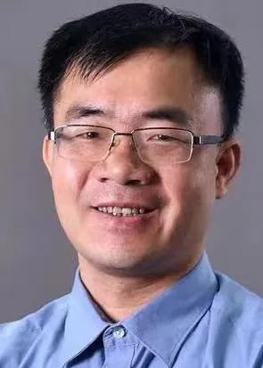

2022 — 2026
比克动力电池 · BAK
AI 总监 / 数字智能总监
以 AI 重塑电池研发、制造与全生命周期管理。
- AI 视觉质检实现产线零漏检，产能提升 20%+
- 预测建模缩短约 3 周生产周期，误差控制在 1% 内
- 利用早期 5–10% 数据预测电池衰减拐点，研发效率提升 50%+
我是周均扬博士，聚焦工业 AI、AI Safety、Safety OS、Vision Operating System 与 AI Agent， 连接算法研究、安全工程、生产系统和可验证的产业价值。

25 年计算科学与算法积累，15 年新能源电池、消费电子及智能硬件一线经验。
我致力于把复杂的 AI 技术转化为可量化的经营成果：更稳定的质量、更短的研发周期、 更高效的产线，以及面向未来的组织能力。作为直接向 CTO、CIO、副总裁及总裁汇报的 AI 高管，我曾从 0 到 1 组建并规模化 AI 团队，架构企业级平台并交付生产级方案， 产业实践覆盖锂电池、新能源、消费电子、工业机器人、智能家居与智能手机制造。
把 AI Safety、Safety OS、视觉运行时与工业智能体连接为生产级闭环。
面向工业系统的风险推理、安全监督、失效降级与可验证 AI
融合 3D ToF、Camera、AGV、Robot、PLC 与 Safety Case 证据链
连接感知、推理、决策与执行的实时工业视觉运行时
把大模型、多模态智能和工业工作流嵌入生产闭环
比克动力电池 · BAK
以 AI 重塑电池研发、制造与全生命周期管理。
蜂巢能源 · SVOLT
搭建企业级 AI 技术平台，赋能智能工厂规模化落地。
安克创新 · Anker
构建跨消费电子产品线的统一 AI SDK 与检测框架。
Industrial AI Knowledge Portal
聚焦 AI Safety、工业空间安全、视觉运行时与工业智能体， 推动研究进入可验证、可部署的生产系统。
香港浸会大学计算机科学博士（2007），中山大学概率论与数理统计硕士（2003）、 应用数学学士（2000）。
长期深耕计算科学、普适计算与工业智能。
CIO 时代对工业数字化实践与领导力的认可。
蜂巢能源企业级 AI 平台与智能工厂建设成果。
美的集团人工智能技术创新与产业应用成果。
自监督增强方法在工业预测与分类中的研究实践。
聚焦能够连接计算方法、工业数据与制造决策的研究方向。
面向质量、设备、工艺和生产管理的可部署 AI 方法。
利用早期数据支持 SOH、老化、衰减和工艺判断。
探索模型在制造知识、研发与现场任务中的适用边界。
面向工业机器人和感知—决策—行动闭环的研究与实践。
作者：Ziyuan Zhong、Junyang Zhou
期刊：IEEE Access，Vol. 13，pp. 97249–97259
DOI：10.1109/ACCESS.2025.3575232
论文提出动态分类与自监督学习结合的方法，用于缩小预测子区域并过滤不合格结果，面向工业预测场景提升分类与预测表现。查看公开条目 →
以下为公开检索到的代表性记录，不等同于完整专利清单；法律状态以官方数据库最新信息为准。
面向电池焊接图像的预处理、目标检测与缺陷统计，用于提高检测效率和结果准确性。
Google Patents →通过特征筛选、概率密度网和样本过滤，获得更可靠的电芯容量预测结果。
Google Patents →利用多光照图像、目标检测和分割结果判断电池极耳贴胶质量。
Google Patents →结合图像识别、最小矩形框和倾斜角度控制分拣设备姿态。
Google Patents →面向文本与信息聚合处理的公开专利记录。
Google Patents →涉及语音唤醒、缓存语音信息和终端识别处理。
Google Patents →面向智能镜的人脸、用户特征和交互控制。
Google Patents →欢迎洽谈工业 AI 高管职位，或就战略、平台和重点项目开展独立咨询。